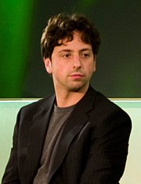
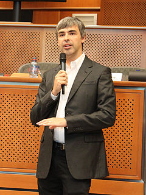

История Google
Компания Google официально была создана в 1998 году.
1996—2001
Создание поиска:

Компания Google появилась как развитие научного проекта Ларри Пейджа и Сергея Брина. В 1996 году студенты Стэнфорда работали над Стэнфордским Проектом Цифровой Библиотеки (SDLP). SDLP был целью «Разработки перспективных технологий для единой, интегрированной и универсальной цифровой библиотеки» и финансировались за счет Национального научного фонда в числе других федеральных агентств. В поисках темы для диссертации Пейдж рассматривал среди прочего изучение математических свойств Всемирной Сети, представляя структуру ссылок в виде огромного графа. Его научный руководитель, Терри Виноград, рекомендовал ему выбрать эту идею (которую Пейдж позже вспоминал как «лучший совет, который я когда-либо получал»), и Пейдж сосредоточился на проблеме выяснения, какие веб-страницы ссылаются на данную страницу, рассматривая число и характер таких обратных ссылок с точки зрения ценности информации на странице (по аналогии с ролью цитат в научных публикациях). В этом научном проекте, названном «BackRub», к нему скоро присоединился Сергей Брин, аспирант Ph.D. Стэнфорда, при поддержке Товарищества Выпускников Национального научного фонда. Брин уже был близким другом Пейджа — в первый раз они встретились летом 1995, Пейдж оказался в группе первокурсников, которым Брин добровольно предложил показать университетский городок. Страницы интернета поисковый робот начал индексировать в марте 1996 года, настроенный из домашней страницы Пейджа в Стэнфорде. Для преобразования собранных данных в уровень важности данной веб-страницы Брин и Пейдж разработали алгоритм PageRank. После анализа результатов BackRub, которые состояли из списка URL, ранжированного по числу обратных ссылок на данный URL, они поняли, что поисковая система, основанная на PageRank, приведёт к лучшим результатам, чем существующие алгоритмы поиска (существующие поисковые системы в это время оценивали страницы по количеству раз, которое искомое слово встречалось на странице).
Подобную стратегию ранжирования страницы и её рейтинга уже исследовал Робин Ли, разработавший к 1996 маленькую поисковую систему «RankDex» от IDD Information Services (филиал Доу Джонса). Технология RankDex была запатентована и использовалась позже, когда Ли основал Baidu в Китае.

Пейдж и Брин были убеждены, что страницы с наибольшим количеством ссылок на них из других страниц с высоким рейтингом должны быть наиболее релевантными при поиске, и это положение стало основой их поисковой системы в рамках диссертации. К началу 1997 года страница описания Backrub была изложена в такой редакции:
Некоторая грубая статистика (с 29 августа 1996 года):
Всего проиндексировано страниц: 75,2306 миллионов
Всего скачано содержания: 207.022 гигабайт
BackRub написан на Java и Python и запущен на серверах Sun Ultra и Intel Pentium, работающих на Linux. Основная база данных хранится на Sun Ultra II с диском 28GB. Скотт Хассан и Алан Стеремберг оказали огромную помощь. Сергей Брин также принимал активное участие и заслуживает большую благодарность.
- Ларри Пейдж page@cs.stanford.edu
Изначально поисковая система находилась на сайте Стэнфорда google.stanford.edu. Домен google.com был зарегистрирован 15 сентября 1997 года.
Брин и Пейдж были против использования всплывающих рекламных сообщений в результатах поиска, или модели финансируемых результатов поиска, и они написали исследовательскую работу в 1998 году на эту тему, будучи ещё студентами. Однако вскоре они изменили своё мнение и на раннем этапе начали включать простые текстовые рекламные объявления, которые в данный момент являются основным источником дохода Google.
Создание компании:
Первое финансирование Google получил в августе 1998 года в размере 100 тыс. долларов США от Энди Бехтольштейма, одного из основателей ныне упраздненной Sun Microsystems. Официально компания Google была зарегистрирована 4 сентября 1998 в гараже друга в Менло-Парк, штат Калифорния.
Имя «Google» произошло от слова «гугол», означающего цифру 1 со ста нолями (хотя Энид Блайтон использовала фразу «Google Bun» в The Magic Faraway Tree (опубликован 1943)). Всё чаще употребляемый в повседневном языке глагол «to google» (ru: «гуглить») был в 2006-м году добавлен в Оксфордский английский Словарь как обозначающий «использование Google для поиска в интернете».
К концу 1998 года Google проиндексировал около 60 миллионов страниц. На главной странице по-прежнему была метка «BETA», но поисковик уже начал получать положительные отзывы: в статье на Salon.com утверждали, что результаты поиска Google были лучше, чем у других поисковиков (Hotbot, Excite.com), и хвалили Google за бóльшие технологические инновации, чем у перегруженных сайтов-порталов (например Yahoo!, Excite.com, Lycos, Netscap’s Netcenter, AOL.com, Go.com и MSN.com), которых отмечали во время растущего пузыря доткома как «будущее сети», особенно инвесторы фондового рынка.
В марте 1999 года компания переехала в отделение на 165 Университетский Авеню в город Пало-Альто, где располагались другие технологические стартапы Кремниевой долины. После быстрого карьерного роста компания арендовала комплекс зданий в Маунтин-Вью в 1600 Amphitheatre Parkway от Silicon Graphics (SGI) в 1999 году, где и остается сегодня; комплекс с тех пор стал известен как Googleplex (игра слов Googleplex — искажённое название числа googolplex, равного 1 с гуголом нулей). В 2006 году Google купила имущество от SGI за 319 млн долл. США.
Поиск Google привлекает растущее число Интернет-пользователей своим простым интерфейсом. В 2000 году Google начала продажу рекламы, связанную с ключевыми словами поиска. Реклама была текстовой, не загромождая дизайн страницы и не уменьшая скорость её загрузки. Ключевые слова продавались на основе сочетания цены предложения и количества кликов, цены начинались от $ 0,05 за клик. Эта модель продажи рекламы по ключевым словам была впервые предложена Goto.com (позднее переименован в Overture Services, а затем приобретен Yahoo! и после ребрендинга стал Yahoo! Search Marketing). В отличие от многих конкурентов, Google удалось постепенно выйти в новый рынок Интернета.
2002—2015
10 декабря 2012 Google, также как Facebook и шесть других компаний, высказалась против IT-патентов, в которых описываются «абстрактные идеи».
В ноябре 2014 года Google имела более 70 офисов, расположенных более чем в 41 государстве.
В 2015 году была проведена реорганизация компании: Google Inc. стала дочерней компанией холдинга Alphabet Inc. и выделила некоторые не относящиеся к Интернету торговые марки в независимые филиалы.
2015-2020
23 октября 2019 года компания Google официально заявила, что она достигла квантового превосходства на квантовом компьютере Sycamore.